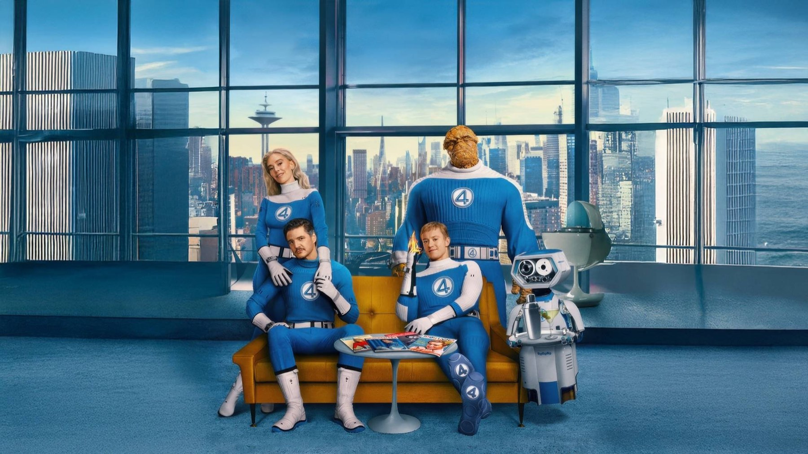

The Fantastic 4: First Steps
I Fantastici 4 - Gli inizi: una famiglia di supereroi in un futuro anni Sessanta, calda e curatissima, meno convincente quando arriva il momento della battaglia
Dopo tanti tentativi andati male, la Prima Famiglia Marvel torna al cinema con una scelta coraggiosa: smettere di spiegarsi. The Fantastic 4: First Steps, titolo italiano I Fantastici 4 - Gli inizi, non perde tempo con la storia delle origini e ci porta subito dentro un mondo che ha già digerito i suoi eroi. È uscito nelle sale italiane mercoledì 23 luglio 2025, distribuito da Disney, e la prima impressione, per noi, è quella di un film che ha un'identità precisa.
Va detto subito: non è il capolavoro che alcuni speravano e nemmeno il disastro che altri temevano. La critica lo ha accolto in modo favorevole ma non entusiasta, e noi ci troviamo piuttosto d'accordo. Ha il cuore al posto giusto, un aspetto visivo che non assomiglia a nient'altro nel genere e un cast affiatato. Gli manca qualcosa quando i pugni sostituiscono le parole.
Di cosa parla I Fantastici 4 - Gli inizi?
La storia si svolge su una Terra alternativa, indicata come Terra-828, dove l'estetica degli anni Sessanta è rimasta il sogno di futuro dell'umanità. Quattro anni dopo l'incidente spaziale che ha dato loro i poteri, Reed Richards (Pedro Pascal), Sue Storm (Vanessa Kirby), Johnny Storm (Joseph Quinn) e Ben Grimm (Ebon Moss-Bachrach) sono eroi amati, quasi una famiglia di celebrità. Poi arriva una minaccia cosmica: Galactus, divinità spaziale che divora i pianeti (Ralph Ineson), preceduto dal suo araldo, Silver Surfer (Julia Garner).
Il film non vuole raccontare una guerra di eroi contro un mostro, ma un dilemma che tocca la squadra da vicino: cosa si è disposti a sacrificare per proteggere la propria famiglia, e cosa per proteggere il mondo? Non diciamo di più, perché la forza del racconto sta proprio nello scoprirlo.

Come è stato costruito questo mondo?
Il regista è Matt Shakman, confermato alla guida del progetto a settembre 2022. La sceneggiatura è passata per diverse mani, con una riscrittura di Josh Friedman nel marzo 2023 e una rifinitura di Eric Pearson entro febbraio 2024. Le riprese sono iniziate il 30 luglio 2024 ai Pinewood Studios, in Inghilterra, e sono proseguite fino a novembre dello stesso anno.
Lo scenografo Kasra Faraani ha costruito una trentina di set distribuiti su otto teatri di posa, compresa una ricostruzione di Times Square più piccola del 22% rispetto all'originale. Shakman ha citato come riferimenti 2001: Odissea nello spazio e l'ottimismo della corsa allo spazio, mentre le linee del design richiamano il tratto di Jack Kirby, il disegnatore che inventò i personaggi con Stan Lee. Il film è stato girato pensando al formato IMAX, con la fotografia di Jess Hall. Ralph Ineson, per interpretare Galactus, ha indossato un'armatura reale di circa 350 libbre.
Tutto questo si vede. Le strade piene di auto tonde e insegne luminose, la tecnologia di casa con il robottino H.E.R.B.I.E. a fare da maggiordomo, i costumi blu e bianchi che sembrano usciti da una vecchia rivista: è un lavoro di scenografia e di costumi che da solo vale il biglietto, e che regala all'universo Marvel un colore che non aveva.
Cosa funziona davvero
La cosa migliore è la famiglia. Pascal dà a Reed Richards la tenerezza goffa di un genio che ragiona meglio con le formule che con le emozioni; Kirby, come hanno notato in molti, è magnetica e dà a Sue la forza di una vera leader; Quinn porta energia e un pizzico di ironia, mentre Moss-Bachrach, che interpreta la Cosa in motion capture, regala all'eroe di roccia un'umanità sorprendente. Le scene domestiche, dove i quattro semplicemente parlano, sono le più riuscite.
Altro punto a favore: la colonna sonora di Michael Giacchino, orchestrale e piena di temi, che secondo Multiplayer è tra i suoi lavori migliori. Per noi accompagna bene un film che alterna momenti intimi e visioni spaziali, e contribuisce a quel tono ottimista che fa la differenza in un genere spesso cupo. Anche Sky TG24 ha apprezzato un cinecomic capace di emozionare senza esplodere a ogni inquadratura.
Cosa funziona meno
I difetti stanno soprattutto nella seconda metà. Il film dura 115 minuti, una durata contenuta per questo genere, e qualche passaggio ne risente: Multiplayer segnala che la Cosa e Silver Surfer restano un po' sottosviluppati e che per i lettori dei fumetti la trama può risultare prevedibile. Siamo d'accordo: avremmo voluto più spazio per i personaggi di contorno e meno sbrigativo l'arrivo al confronto finale.
ComingSoon, che ha dato 3 stelle su 5, è più severo: lamenta un'estetica anni Sessanta non sempre coerente nella regia, scelte poco credibili per personaggi che dovrebbero essere dei geni e un cast, Pascal e Kirby in testa, a tratti troppo serio. Per la testata il film resta un po' a terra rispetto al suo potenziale. Non condividiamo del tutto la severità, ma capiamo da dove nasce: quando la storia passa dal dilemma morale allo scontro con il cattivo, il film perde un po' della sua originalità e si avvicina a quanto abbiamo già visto.
Un cinecomic che si ama quando parla di famiglia e si apprezza un po' meno quando deve fare la guerra.
Come è stato accolto?
A ottobre 2026 il film ha un Metascore di 65 su 100 su Metacritic, fascia dei giudizi generalmente favorevoli, con un pubblico che sul sito si ferma a 6,5. Fin dall'uscita le recensioni sono state divise tra chi lo ha considerato un ritorno alle radici dello spirito dei fumetti e chi lo ha trovato gradevole ma poco audace. Un quadro che somiglia al nostro.
Al botteghino ha esordito negli Stati Uniti il 25 luglio 2025 con circa 117,6 milioni di dollari, secondo Box Office Mojo. Sempre secondo Box Office Mojo, a ottobre 2026 il totale mondiale registrato è di circa 521,9 milioni di dollari.
Dove vederlo?
In Italia è disponibile su Disney+ dal 5 novembre 2025. Per vederlo al meglio consigliamo uno schermo grande e un buon impianto audio: scenografie e musiche lo meritano.
Un film che sceglie il cuore prima dei muscoli: bellissimo da guardare, ben recitato, con una famiglia che funziona e un cattivo meno memorabile della sua minaccia. Lo consigliamo a chi vuole un cinecomic più luminoso e più umano del solito; chi cerca un'azione travolgente potrebbe restare a metà.
Domande frequenti
Quando è uscito in Italia The Fantastic 4: First Steps?
Nelle sale italiane il 23 luglio 2025, distribuito da Disney. In streaming su Disney+ dal 5 novembre 2025.
Bisogna aver visto gli altri film Marvel per capirlo?
No: la storia è ambientata in un universo alternativo e racconta la squadra dopo che ha già ottenuto i poteri, senza ripetere la storia delle origini.
Quanto dura il film?
115 minuti, secondo i dati di Box Office Mojo e MYmovies.
Fonti consultate (8)
- Wikipedia – The Fantastic Four: First Steps
- ComingSoon.it – I Fantastici 4: Gli inizi, la recensione
- Sky TG24 – I Fantastici 4: Gli inizi, la recensione
- Multiplayer.it – I Fantastici 4: Gli inizi, recensione
- MYmovies – I Fantastici 4 - Gli Inizi
- Box Office Mojo – The Fantastic Four: First Steps
- Metacritic – The Fantastic Four: First Steps
- TMDB – The Fantastic 4: First Steps